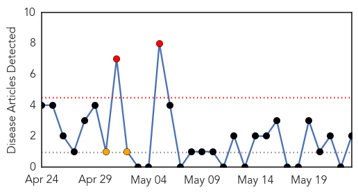
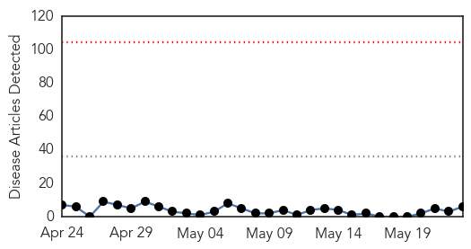
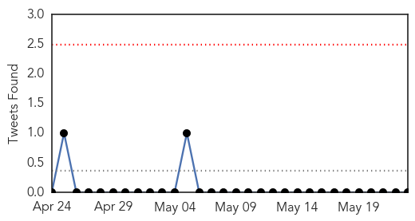
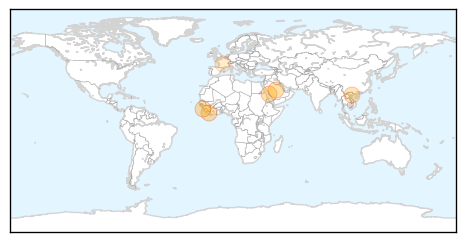
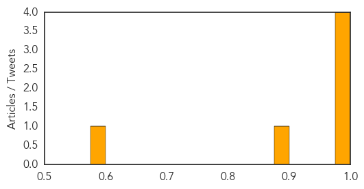

Pertussis
30-Day Web Trend
2 alerts, 2 warnings

30-Day Twitter Trend
0 alerts, 0 warnings

Article Locations
Article Confidences

Top Articles:
Top Tweets:
-
No tweets found for May 23, 2014
Ebola
30-Day Web Trend
0 alerts, 0 warnings

30-Day Twitter Trend
0 alerts, 0 warnings

Article Locations
Article Confidences
Top Articles:
- 0.999
- Guinea announces 2 new cases of Ebola in previously unaffected area
- 0.999
- Guinea announces two new cases of Ebola in previously unaffected area
- 0.997
- Is Mideast xenophobia stalling cure for MERS virus?
- 0.996
- Saudi Arabia feels the heat over Mers
- 0.884
- Virus Ebola: sensibiliser la communauté vietnamienne au Mozambique
- 0.584
- French Politician Says Lethal Virus Offers Answer To Immigration Problem
Top Tweets:
-
No tweets found for May 23, 2014